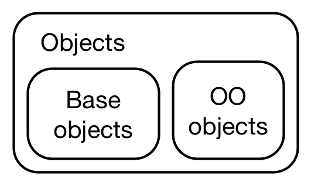

17 面向对象编程
OOP
面向对象编程（object-oriented programming，OOP）：编写表示现实世界中的事物和情景的类（class）并基于这些类创建对象（object）。在编写类时，你要定义所有对象都具备的通用行为（方法 method）。根据类创建对象称为实例化，实例（instance）。
特点：
封装encapsulation：封装是把客观事物封装成抽象的类，用户不需要担心对象的细节，因为它们被封装在标准接口（如参数，）后面
继承inheritance ：子类共享其父类的方法。原有的类称为父类（parent class）或超类（super class），新类称为子类（child class）。
多态polymorphism：由继承而产生的相关的不同的类，其对象对同一消息做出不同的响应。将函数的接口与其实现分开考虑，对不同类型的输入使用相同的函数形式
OO 系统
类 （class）定义对象是什么。
方法（method）描述该对象可以做什么
字段（fields） 即该类的每个实例（instance）所拥有的数据
方法调度（method dispatch） 在给定类的情况下查找正确方法的过程称为方法调度
面向对象编程有两种主要范式
函数式 OOP： 方法属于泛型函数，函数调用，内部组件也是函数。
generic(object, arg2, arg3)，如S3类、S4类封装 OOP ：方法属于对象或类，对象封装了数据（字段）和 行为（方法）。
object.method(arg1, arg2)，如R6类
17.1 R 中的对象
R中存在的一切都是一个对象，包括 base objects 和 OO objects 。

17.1.1 base objects
基本对象来自 S
基本对象和 OO 对象之间的区别在于 OO 对象具有“类”属性
虽然只有 OO 对象具有类”class”属性，但每个对象都具有基本类型（base type）：
Show the code
基本类型包括数据的基本类型（数值，字符，逻辑，复数等），函数类型（闭包、内置、特殊），环境，类，…… 等等。
17.1.2 OO objects：class 属性
S3：是 R 的第一个 OOP 系统，Statistical Models in S
S4：是对 S3 的正式和严格的重写，Programming with Data，S4 在默认安装(
options()$defaultPackages) methods 包中实现。Bioconductor 项目使用的就是S4类。R6：构建在环境之上的封装OOP，具有引用语义，modified in-place 而非“修改时复制（copy-on-modify）”，在 R6 包中实现。
prototype（原型）：模糊类和类（对象）的实例之间的区别，通常指的是一个对象的初始实例，它定义了一组属性和方法，其他对象可以基于这个原型进行创建。例如ggplot2 包的ggproto类
17.2 S3类
S3 对象是至少具有一个属性（其他属性可用于存储其他数据）的base type( 有mode属性)。
Show the code
f <- factor(c("a", "b", "c"))
# 基本类型
typeof(f)
#> [1] "integer"
# 其他属性
attributes(f)
#> $levels
#> [1] "a" "b" "c"
#>
#> $class
#> [1] "factor"剥离类属性，保留其他属性
Show the code
unclass(f)
#> [1] 1 2 3
#> attr(,"levels")
#> [1] "a" "b" "c"查看方法调度，generic.class()
Show the code
library(sloop)
s3_dispatch(print(f))
#> => print.factor
#> * print.default17.2.1 类的实例
要使对象成为类的实例，您只需设置类属性即可。
构造S3类的三原则
命名
new_myclass()base object有一个参数，每个属性有一个参数。
检查base object的类型和每个属性的类型
例如 Date 类
difftime 类
有效性验证
Show the code
new_factor <- function(x = integer(), levels = character()) {
stopifnot(is.integer(x))
stopifnot(is.character(levels))
structure(
x,
levels = levels,
class = "factor"
)
}
new_factor(1:5, "a")
#> Error in as.character.factor(x): malformed factor
new_factor(0:1, "a")
#> Error in as.character.factor(x): malformed factorShow the code
validate_factor <- function(x) {
values <- unclass(x)
levels <- attr(x, "levels")
if (!all(!is.na(values) & values > 0)) {
stop(
"All `x` values must be non-missing and greater than zero",
call. = FALSE
)
}
if (length(levels) < max(values)) {
stop(
"There must be at least as many `levels` as possible values in `x`",
call. = FALSE
)
}
x
}
validate_factor(new_factor(1:5, "a"))
#> Error: There must be at least as many `levels` as possible values in `x`
validate_factor(new_factor(0:1, "a"))
#> Error: All `x` values must be non-missing and greater than zero如果希望用户从类中构造对象，还应该提供一个帮助程序方法
- 强制类型转换
- 复杂对象字符串表示
- 复杂对象由多个简单组件指定
Show the code
POSIXct <- function(year = integer(),
month = integer(),
day = integer(),
hour = 0L,
minute = 0L,
sec = 0,
tzone = "") {
ISOdatetime(year, month, day, hour, minute, sec, tz = tzone)
}
POSIXct(2020, 1, 1, tzone = "Asia/Shanghai")
#> [1] "2020-01-01 CST"17.2.2 泛型函数和方法调度
泛型函数（generic function）
Show the code
my_new_generic <- function(x) {
UseMethod("my_new_generic")
}Show the code
library("sloop")
x <- matrix(1:10, nrow = 2)
s3_dispatch(mean(x))
#> mean.matrix
#> mean.integer
#> mean.numeric
#> => mean.default=>指示调用的方法
*指示此处已定义但未调用的方法，“default”类是一个特殊的伪类。这不是一个真正的类，但包含它是为了可以定义一个标准回退，每当特定于类的方法不可用时，就会找到该回退。
Show the code
mean
#> function (x, ...)
#> UseMethod("mean")
#> <bytecode: 0x000001bd3db95df0>
#> <environment: namespace:base>
s3_methods_generic("mean")| generic | class | visible | source |
|---|---|---|---|
| mean | Date | TRUE | base |
| mean | default | TRUE | base |
| mean | difftime | TRUE | base |
| mean | POSIXct | TRUE | base |
| mean | POSIXlt | TRUE | base |
| mean | quosure | FALSE | registered S3method |
| mean | vctrs_vctr | FALSE | registered S3method |
Show the code
s3_methods_class("ordered")| generic | class | visible | source |
|---|---|---|---|
| as.data.frame | ordered | TRUE | base |
| Ops | ordered | TRUE | base |
| relevel | ordered | FALSE | registered S3method |
| scale_type | ordered | FALSE | registered S3method |
| Summary | ordered | TRUE | base |
| type_sum | ordered | FALSE | registered S3method |
17.2.3 S3 方法重载
Show the code
# S3 方法重载示例
generic_function <- function(x, y) {
UseMethod("generic_function")
}
# 为numeric类定义方法
generic_function.numeric <- function(x, y) {
print(x + y)
}
# 为character类定义方法
generic_function.character <- function(x, y) {
print(paste(x, y))
}
# 调用函数
generic_function(1, 2) # 输出 3
#> [1] 3
generic_function("Hello", "World") # 输出 "HelloWorld"
#> [1] "Hello World"
# S3 方法重载示例
`+` <- function(x, y) {
UseMethod("+")
}
# 为character类定义方法
`+.character`<- function(x, y) {
print(paste0(x, y))
}
"a"+"b"+"c"
#> [1] "ab"
#> [1] "abc"17.3 R6 类
17.4 S4类
创建类 setClass() ，创建泛型函数 setGeneric() ，创建方法 setMethod()
此外，S4 提供多重继承（即一个类可以有多个父级）和多重调度（即方法调度可以使用多个参数的类）
S4 的一个重要新组件是 slot，它是对象的命名组件，使用专用子集运算符 @（发音为 at）进行访问。
accessor functions @
Show the code
library(methods)17.4.1 创建类、泛型和方法
Show the code
setClass(
#类名
"Person",
# 名称和类的命名字符向量
slots = c(name = "character", age = "numeric"),
# 默认值列表
prototype = list(name = NA_character_, age = NA_real_)
)
x <- new("Person", name = "XXX",age=24)
str(x)
#> Formal class 'Person' [package ".GlobalEnv"] with 2 slots
#> ..@ name: chr "XXX"
#> ..@ age : num 24
x@name
#> [1] "XXX"
slot(x,"age")
#> [1] 24
# 泛型
setGeneric("age", function(x) standardGeneric("age"))
#> [1] "age"
setGeneric("age<-", function(x, value) standardGeneric("age<-"))
#> [1] "age<-"
# 方法
setMethod("age", "Person", function(x) x@age)
setMethod("age<-", "Person", function(x, value) {
x@age <- value
x
})
age(x)
#> [1] 24
age(x) <- 13
age(x)
#> [1] 13
setMethod("show", "Person", function(object) {
cat(is(object)[[1]], "\n",
" Name: ", object@name, "\n",
" Age: ", object@age, "\n",
sep = ""
)
})
sloop::otype(x)
#> [1] "S4"
sloop::ftype(age)
#> [1] "S4" "generic"
x
#> Person
#> Name: XXX
#> Age: 13
setGeneric("name", function(x) standardGeneric("name"))
#> [1] "name"
setMethod("name", "Person", function(x) x@name)
name(x)
#> [1] "XXX"
setGeneric("name<-", function(x, value) standardGeneric("name<-"))
#> [1] "name<-"
setMethod("name<-", "Person", function(x, value) {
x@name <- value
validObject(x)
x
})
name(x) <- "Lily"
name(x)
#> [1] "Lily"17.4.2 继承
Show the code
setClass("Employee",
contains = "Person",
slots = c(
boss = "Person"
),
prototype = list(
boss = new("Person")
)
)
str(new("Employee"))
#> Formal class 'Employee' [package ".GlobalEnv"] with 3 slots
#> ..@ boss:Formal class 'Person' [package ".GlobalEnv"] with 2 slots
#> .. .. ..@ name: chr NA
#> .. .. ..@ age : num NA
#> ..@ name: chr NA
#> ..@ age : num NA17.4.3 多重继承和多重调度
。。。
17.5 原型类
17.5.1 ggproto 类
参考 ggplot2-book.org/internals#sec-ggproto
Show the code
NewObject <- ggproto(
`_class` = NULL,
`_inherits` = NULL
)
NewObject
#> <ggproto object: Class gg>
#> _inherits: NULLShow the code
# 新类
NewClass <- ggproto("NewClass", NULL,
# fields 默认值
geom=NA,
# methods
)
NewClass
#> <ggproto object: Class NewClass, gg>
#> geom: NAShow the code
# 实例
instance <- ggproto(NULL, NewClass,
# 字段赋值
geom="point"
)
instance
#> <ggproto object: Class NewClass, gg>
#> geom: point
#> super: <ggproto object: Class NewClass, gg>Show the code
# 继承
NewSubClass <- ggproto("NewSubClass", NewClass)
NewSubClass
#> <ggproto object: Class NewSubClass, NewClass, gg>
#> geom: NA
#> super: <ggproto object: Class NewClass, gg>